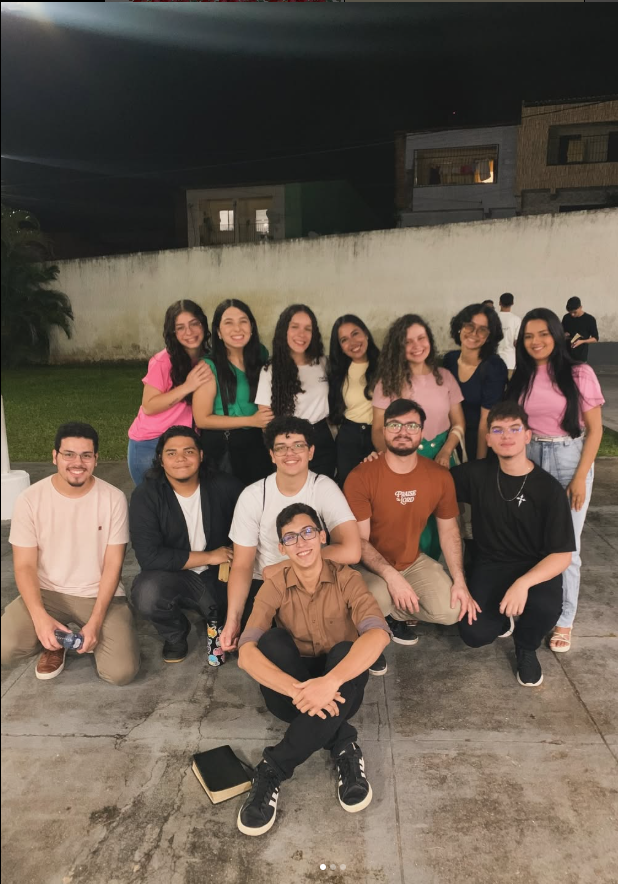
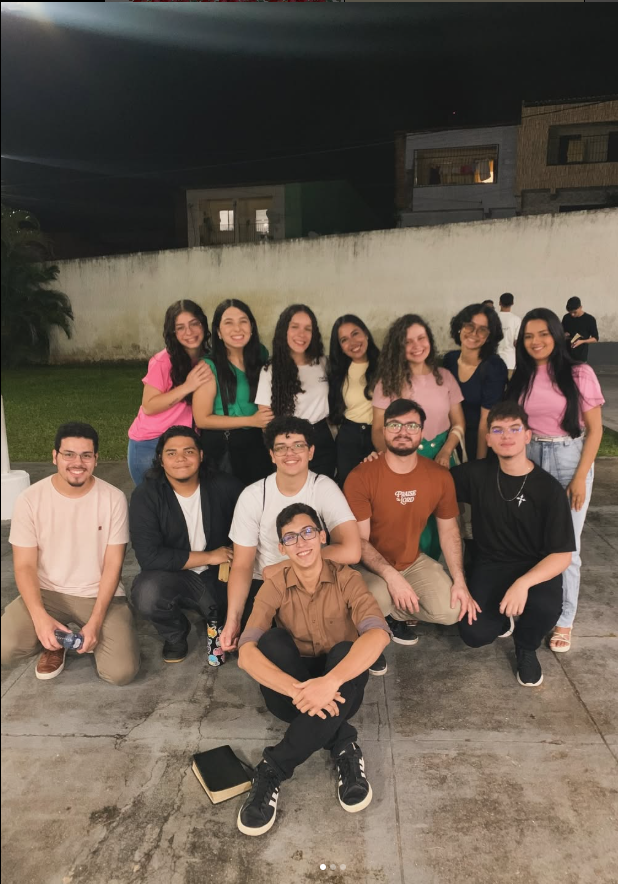

Aprisco Ruakh
Uma homenagem a
Alisson Bastos
"O vento sopra onde quer, e ouves a sua voz..." – João 3:8
“Há um tempo de plantar e um tempo de colher.” – Eclesiastes 3:2
O início da jornada
Desde o primeiro dia no Aprisco Ruakh, Alisson caminhou conosco com fé, alegria e propósito.
Sua presença foi como o vento suave de Deus — constante, leve, mas sempre transformadora.
 


O vento sopra onde quer... e ouves a sua voz. – João 3:8
Companheirismo e fé
Entre risadas, ensaios e orações, criamos laços eternos.
Alisson, tua amizade foi um presente que refletiu o amor de Cristo em cada gesto.
“Em todo tempo ama o amigo.” – Provérbios 17:17
Novos ventos
Chegou o tempo de seguir novos caminhos, mas o mesmo vento que te guiou até aqui continuará te conduzindo.
Ruakh, o sopro de Deus, vai contigo, Alisson.
Que o vento leve tuas sementes de fé para novos horizontes.
Com carinho,
De todos nós, teus amigos e irmãos do Aprisco Ruakh.
Te desejamos novos começos, novas bênçãos, e a eterna presença do Espírito que sopra vida em tudo que toca.
“O Senhor te abençoe e te guarde; o Senhor faça resplandecer o seu rosto sobre ti.” – Números 6:24-25


Até breve, Alisson 🌿